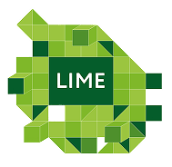
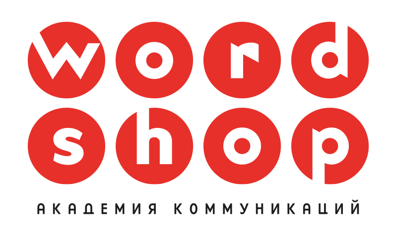

Tattoo 2.0

По оценкам ВОЗ, более 30 миллионов человек в мире нуждаются в протезах конечностей. В то же время, по данным Pew Research Center, 32% взрослых имеют хотя бы одну татуировку.
Почти каждый третий человек с ампутацией потенциально теряет свою татуировку вместе с частью тела. Но речь идет не только о теле. Это утрата воспоминаний, символов, значимых историй, нанесенных на кожу. Это потеря части себя и своей идентичности.
Tattoo 2.0 — это инновационный проект, использующий нейросети для восстановления утраченных татуировок на протезах. Мы возвращаем людям возможность вновь почувствовать себя цельными, сохраняя их уникальность и личную историю. Так Tattoo 2.0 меняет подход к персонализации протезов и жизни людей.
Интересная идея и внезапная территория. Мне кажется, это еще классно работает на тему того, что люди стесняются протезов
Классный инсайт на стигматизированной теме, очень лайк
Классно, и в то же время просто

Silver 2025
Nomination: Future Idea
Work: Tattoo 2.0

2025
на курсе инновационного креатива